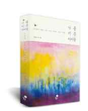
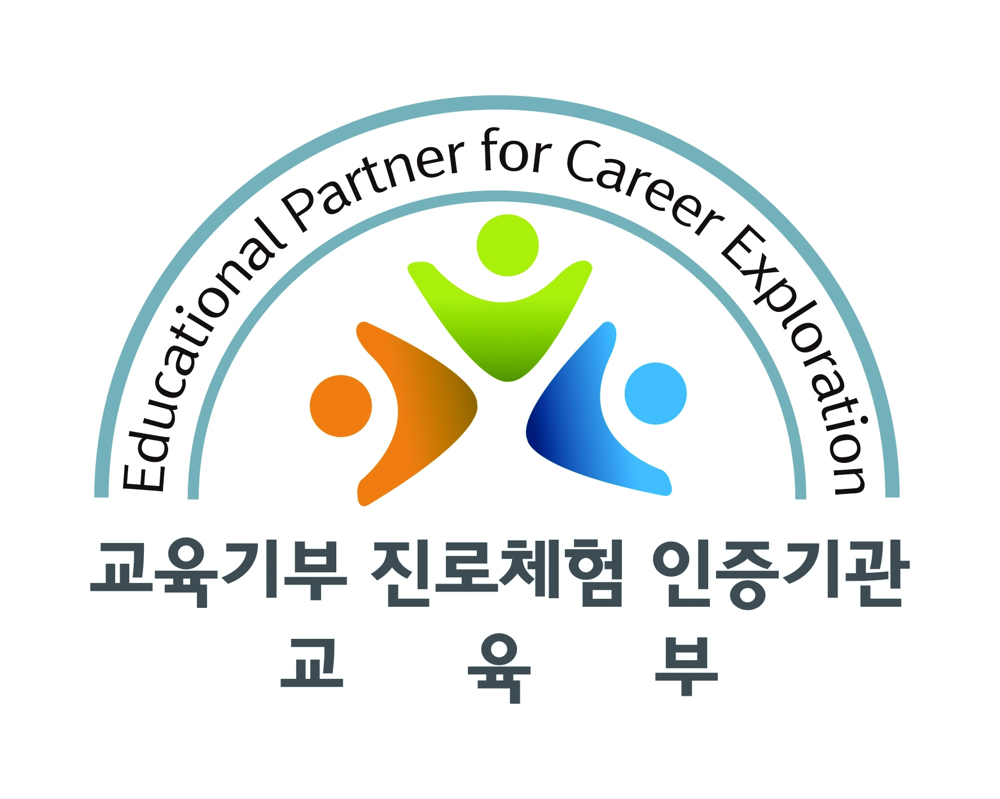

『나를 키운 아이들』
이양순 원장의 교육 경험과 제자들의 이야기를 담은 책
이양순 원장이 아이들과 함께해 온 교육의 여정, 저서와 진로체험 교육 활동의 기록을 소개합니다.
『나를 키운 아이들』은 이양순 원장이 제자들과 함께한 교육의 시간을 담은 저서입니다. 교육기부 진로체험 인증기관 마크는 연구원의 진로체험 교육 활동과 관련된 자료로, 저서와는 성격이 다른 기록입니다.

이양순 원장의 교육 경험과 제자들의 이야기를 담은 책

연구원의 진로체험 교육 활동과 관련해 제공된 인증기관 마크입니다. 현재 인증 유효 여부는 별도 확인이 필요합니다.
2026년 국민일보는 심리상담과 수공예·예술활동에 참여한 한 학생의 성장 사례를 소개했습니다. 개인 식별정보 없이 보도 내용의 개요만 전합니다.
기사 원문 →2019년 지역내일 인터뷰에서 이 원장은 학생이 자신의 강점을 발견하고 진로를 향해 나아가는 모습에서 보람을 느낀다고 전했습니다.
기사 원문 →2016년 출간된 『나를 키운 아이들』은 오랜 교직에서 만난 제자들의 이야기를 담았습니다.
기사 원문 →